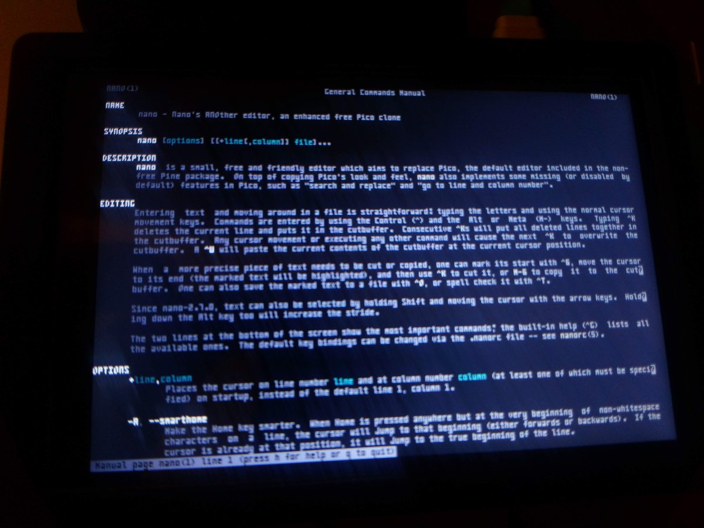

https://twitter.com/LeedsGamesToast/status/1166972434987331584 @LeedsGamesToast @huddevfield @shindigdev @magic_bane Everything you need to know about the #Bradford #GameDev meetup in a pub can be found on this page
we even have a meetup
https://www.meetup.com/Badonkadonk/
and our next date is Wednesday 11th September.
People questioning the value of the royal family have obviously not taken into account the amount of magical energy you can generate from just one royal sacrifice.
https://twitter.com/IcepickInTheory/status/1166678347772026883 @IcepickInTheory It could be worse.
Your internet could be down*
*My internet is down.
If PUSH is four letters and PULL is four letters then why would you use POP, a three letter word?
No human being would stack words like that.
https://twitter.com/wetgenes/status/1166155754275049474 Now I need to get one of these Brazil screen magnifiers to be able to read it easily.
Generated some PSF files for https://github.com/xriss/fun64/tree/master/art/funfont64 which means my 4x8 pixel font can now be used in a linux terminal (setfont).
This is a photo of a 480x320 raspberry pi LCD showing a screen of text.
Yup, them there letters are all 3 pixels wide with a 1 pixel space :) 
https://twitter.com/K_0/status/1166057007775911938 @K_0 We made a similar thing :)
https://twitter.com/accessjames/status/1165249334453133312 @accessjames Do you have funding? because I need investment to build a physical escape room game which is just a perfect reconstruction of the final scene form the Italian Job.
We are talking pneumatic tilting floor, full back projection of the alps, real gold bars, live music, everything.
I have just realized you can put under construction gifs in the readme of your unfinished github projects and now I feel it should be mandatory.
@DickWThomas @KeybaseIO I ended up just getting a dedicated server last time I looked at backup options.
https://oneprovider.com/search
7 euros a month gets you a box with 1TB and you can use it for other things as well.
Alien without O'Bannon is just Prometheus. https://twitter.com/timmaughan/status/1164517655845515265
https://twitter.com/Stuart_Lilford/status/1163099161182515200 @Stuart_Lilford Maybe more separation between mechanics and flavor.
If you hit a story cliche you can't also hit a mechanic one and vice versa.
So Zombie horde shooter bad
but Zombie farm and cook,less bad.
https://store.steampowered.com/app/266390/Farm_for_your_Life/
https://twitter.com/Stuart_Lilford/status/1163029265530662913 @Stuart_Lilford I figure farming is not the same as crafting. IE something like rune factory doesn't have crafting (I think) but is very farm.
Procedural Generation is probably too a big catch all, eg shuffling a pack of cards is procedural generation.
Chulip
this is a great puzzle game although you would probably be better off playing a c64 emulator version... https://twitter.com/WhatsOnSteam/status/1162130005142462464
https://twitter.com/wetgenes/status/1162375985829990402 Skipped most of the dialogue :) but I would say its the best Ys game Ive played.
Only thing I did not like was the breaking of the map into area chunks, often at places that make no sense. Would have felt much more coherent to be one seamless area.
https://twitter.com/wetgenes/status/1162111043579064331 It is good, you should try it, has a nice feeling of progression (kinda important for RPGs) and a pikmin style unlocking of areas (need x people to move obstacles) the fights are button mashes but there is a little bit of tactics to switching damage types and it's very polished.
Ys VIII is having a free weekend so lets give that a try...
https://store.steampowered.com/app/579180/Ys_VIII_Lacrimosa_of_DANA__VIIILacrimosa_of_DANA/
I am re-watching Blake's 7 because it's less depressing and has a lower body count than the news.